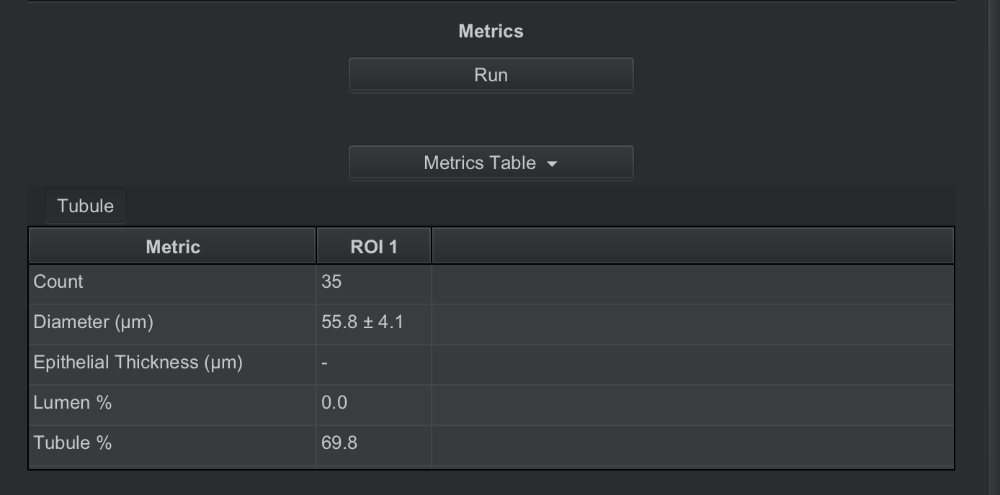
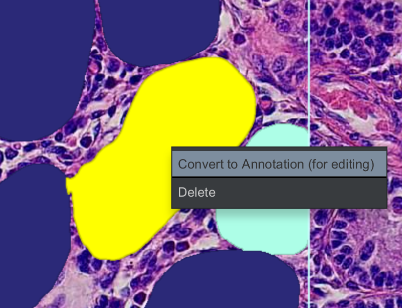
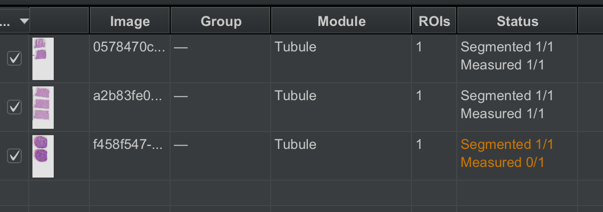
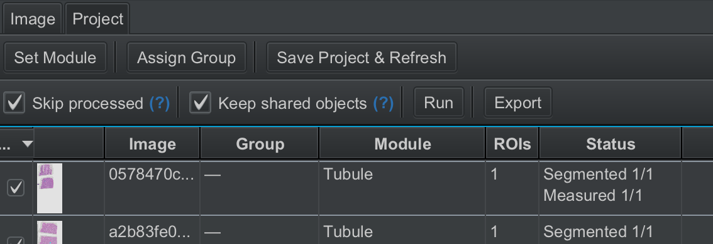
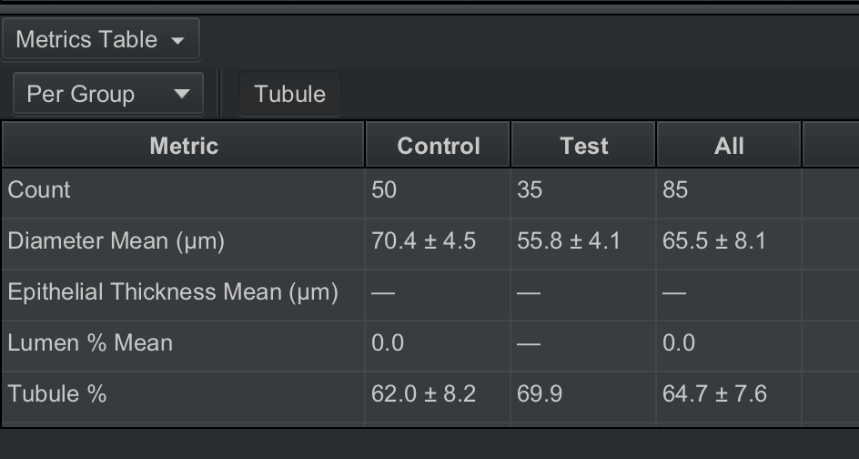

Advanced Usage
This section offers detailed usage tips to get the most out of using ReproPath.
The Image tab (for single image workflows)
The Image tab is used to work on one image at a time, specifically the current image open in the viewer.

Under ROI Defaults, you can change the size of the default ROI placed down when you click with the ReproPath ROI tool.
Image tab functions will only process selected ROIs. Select an ROI by double-clicking it, or Ctrl+Click (Cmd+Click on Mac) to select multiple ROIs.
If there are other objects in the ROIs making them hard to click, try selecting the ROIs directly from the Annotations tab in the left sidebar.
Segmentation will run model predictions only on your currently selected ROIs.
Metrics will compute module-specific metrics using existing segmentations, only on your selected ROIs.
If the currently opened image has already had metrics computed, a per-image metrics table will be available in the Image tab.

Pressing Export will export any computed metrics for this image to an Excel file. This is not the same Excel sheet generated from exporting in the Project tab.
Editing Segmentations
Our models can make mistakes too.
You have the opportunity to correct these mistakes manually.
QuPath viewer objects exist in two different forms: annotations or detections.
Annotations are editable, user-made objects.
Detections are usually created automatically, and are space-efficient. They are optimized for many to exist, and as such are uneditable.
Model segmentation results are returned as detections.
To edit model segmentations, they must be converted to annotations first: select one or more detection objects, right click, and press Convert to Annotation (for editing).

The recommended way to edit annotations is to:
- Delete erroneous objects.
- Change object classes by selecting an object, right clicking, then choosing a class under Set classification.
- Use the Brush tool to adjust the mask of a selected annotation.
- Use the Polygon or Brush tools to create new objects. Make sure these objects are given a classification.
Important note: Any edits to segmentations will invalidate any metrics
calculated for that ROI. Invalidated metrics will be ignored in metrics display and export.
Metrics must be re-run for these ROIs to have valid metrics again. You can run metrics for these ROIs via
the Image tab for selective work, or the Project tab for bulk processing.
You can check the Project tab status column for project state.

For the third slide image, you can see that segmentations are present, but metrics need to be re-measured.
Advanced project tab settings
The Project tab offers additional settings which were skipped in the basic usage tutorial.

For info on the Skip processed and Keep shared objects settings which affect Run functionality, hover over the (?) icons.
Groups:
Before you run processing, you may want to group images first. To do this, select images by checking the
tickboxes, then press Assign Group to set a group name.
A grouped project would look something like this:

Grouping allows you to specify aggregation groups for metrics. Once the processing pipeline is done running, you can find results in the metrics table at the bottom of the window.

Open the "Per ..." dropdown to change the granularity of the computed metrics. You can see metrics at the group, image, and ROI levels. Using the Per Group setting, you can see summary metrics for each separate group. This is useful for displaying a measured difference between a Control and Test group, for example.
Saving Images
QuPath allows easily saving your ROIs as images with or without the annotations.
To do so, select an ROI, then in the menu bar, choose File → Export images, then choose Original pixels to save the actual image, or Rendered RGB (with overlays) to export the image with annotations overlaid.